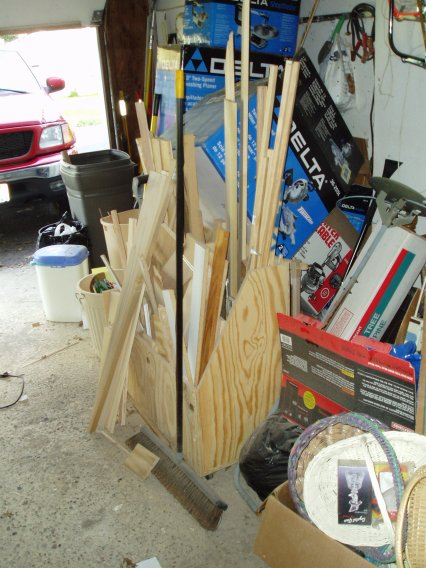

ThunderEagle's Nest

This was featured in ShopNotes #71. The workbench has become pretty useful as storage, but I need to get that drill press off of it as the top is now nearly useless. I know it looks cluttered back there, but that is mainly storage space, not work space. I still have a lot of organization to do to make the most out of my shop. The Cutoff bin is very useful, as well as those Tool Totes under the bench there. They are similar to the Tool Tote Bench I made before, just are not as nice. :)
I have found them to be very good for putting sheet goods on them to break them down. Keeps it off of the ground, but is low enough that it is a lot easier to work with the full sheets and you don't run into the situation where you are streaching out to get the circular saw all the way across the cut or stopping to walk around to the other side like can happen if the sheets are up too high.
Excuse the boxes there, I just got a few new tools and I like keeping the empty boxes and packaging for a few months to make sure nothing fails right away. Those are just empty boxes tossed to the side of the garage. Believe it or not, we actually put an Explorer in there durning the Winter.